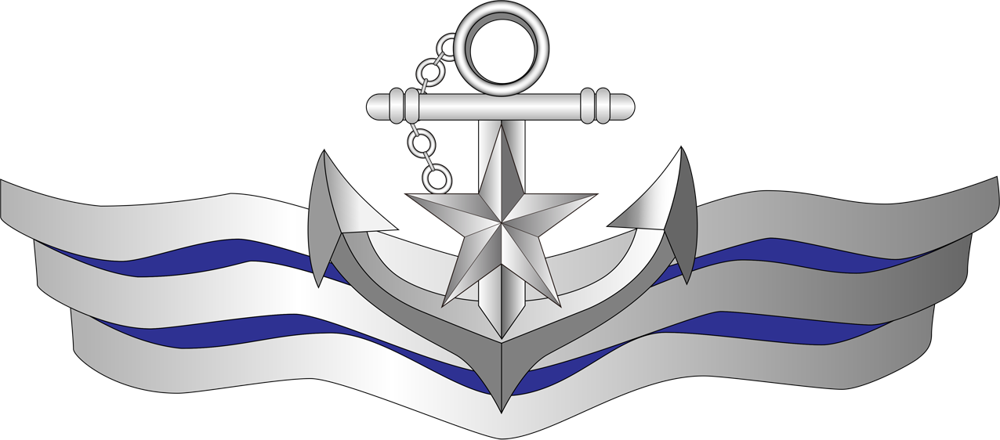
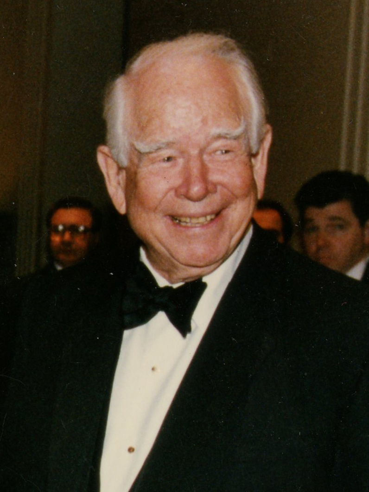
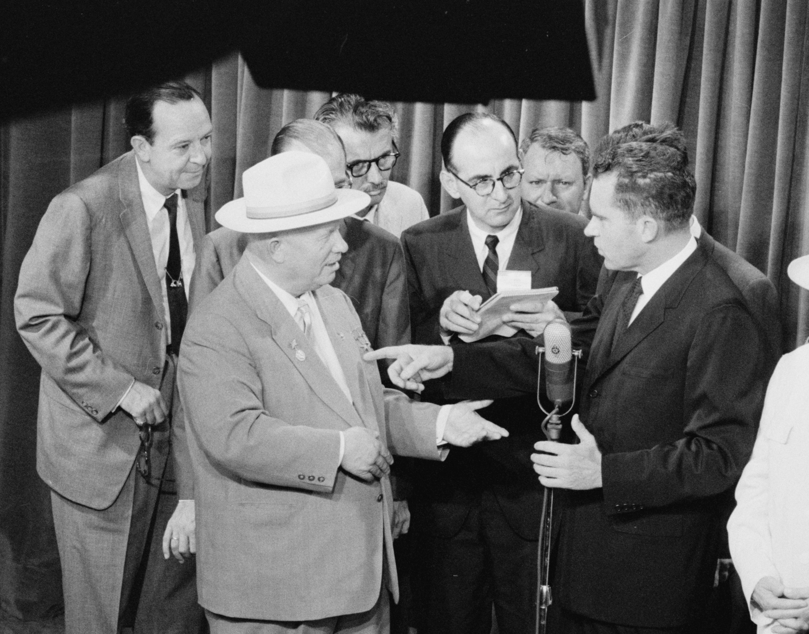
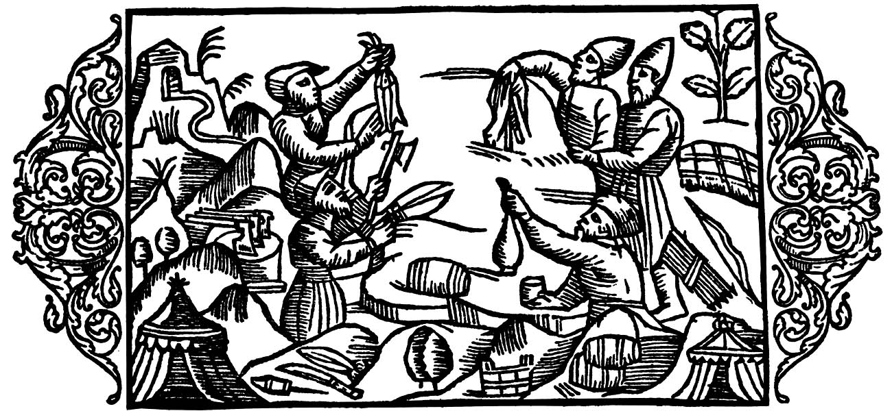
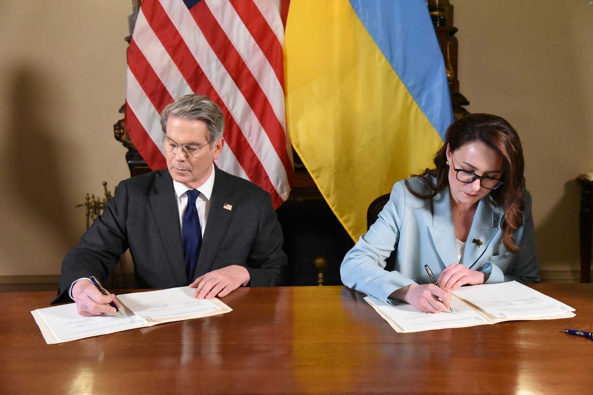
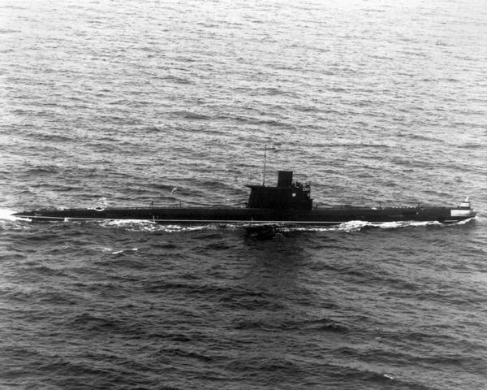
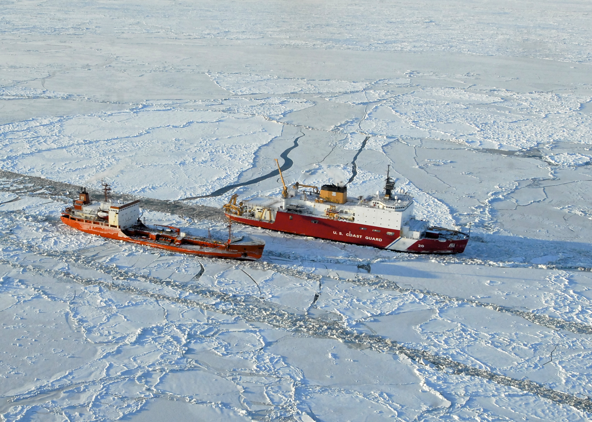
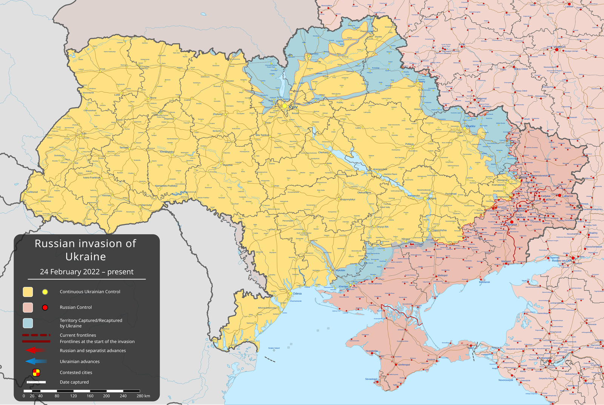
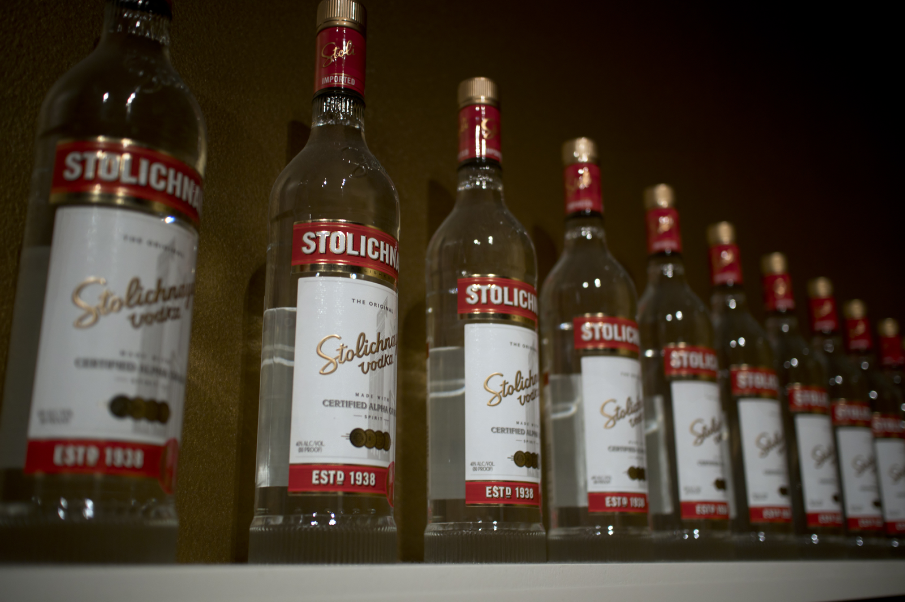
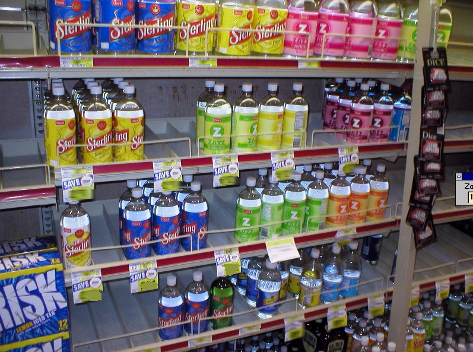

百事可樂的蘇聯海軍
共 43 幕分鏡 · 預估成片總長度：09分36秒 (576.2s) · 自動生成於 20261001_百事可樂的蘇聯海軍
🎞️ 各場景分鏡與語音審查
001_scene_1 · 第 1 幕
時長: 11.57s

002_scene_2 · 第 2 幕
時長: 15.74s

003_scene_3 · 第 3 幕
時長: 12.46s

004_scene_4 · 第 4 幕
時長: 17.3s

005_scene_5 · 第 5 幕
🖼️ 畫中畫 PiP
時長: 13.78s

疊加參考圖 (PiP)：

006_scene_6 · 第 6 幕
🖼️ 畫中畫 PiP
時長: 16.22s

疊加參考圖 (PiP)：

007_scene_7 · 第 7 幕
時長: 9.85s

008_scene_8 · 第 8 幕
時長: 12.61s

009_scene_9 · 第 9 幕
🖼️ 畫中畫 PiP
時長: 12.17s
無畫面
疊加參考圖 (PiP)：

010_scene_10 · 第 10 幕
🖼️ 畫中畫 PiP
時長: 13.29s

疊加參考圖 (PiP)：

011_scene_11 · 第 11 幕
🖼️ 畫中畫 PiP
時長: 13.01s
無畫面
疊加參考圖 (PiP)：

012_scene_12 · 第 12 幕
時長: 12.22s

013_scene_13 · 第 13 幕
時長: 7.85s

014_scene_14 · 第 14 幕
時長: 16.46s

015_scene_15 · 第 15 幕
時長: 14.98s

016_scene_16 · 第 16 幕
🖼️ 畫中畫 PiP
時長: 14.22s
無畫面
疊加參考圖 (PiP)：

017_scene_17 · 第 17 幕
🖼️ 畫中畫 PiP
時長: 16.54s

疊加參考圖 (PiP)：

018_scene_18 · 第 18 幕
時長: 18.06s

019_scene_19 · 第 19 幕
時長: 16.06s

020_scene_20 · 第 20 幕
🖼️ 畫中畫 PiP
時長: 15.7s
無畫面
疊加參考圖 (PiP)：

021_scene_21 · 第 21 幕
時長: 13.01s

022_scene_22 · 第 22 幕
🖼️ 畫中畫 PiP
時長: 12.14s

疊加參考圖 (PiP)：

023_scene_23 · 第 23 幕
時長: 11.29s

024_scene_24 · 第 24 幕
時長: 13.22s

025_scene_25 · 第 25 幕
時長: 12.81s

026_scene_26 · 第 26 幕
🖼️ 畫中畫 PiP
時長: 10.25s

疊加參考圖 (PiP)：

027_scene_27 · 第 27 幕
時長: 10.06s

028_scene_28 · 第 28 幕
時長: 19.47s

029_scene_29 · 第 29 幕
🖼️ 畫中畫 PiP
時長: 13.3s
無畫面
疊加參考圖 (PiP)：

030_scene_30 · 第 30 幕
時長: 14.46s

031_scene_31 · 第 31 幕
時長: 12.51s

032_scene_32 · 第 32 幕
時長: 17.9s

033_scene_33 · 第 33 幕
🖼️ 畫中畫 PiP
時長: 11.29s

疊加參考圖 (PiP)：

034_scene_34 · 第 34 幕
🖼️ 畫中畫 PiP
時長: 13.26s

疊加參考圖 (PiP)：

035_scene_35 · 第 35 幕
🖼️ 畫中畫 PiP
時長: 11.73s

疊加參考圖 (PiP)：

036_scene_36 · 第 36 幕
🖼️ 畫中畫 PiP
時長: 10.4s

疊加參考圖 (PiP)：

037_scene_37 · 第 37 幕
時長: 10.41s

038_scene_38 · 第 38 幕
時長: 13.58s

039_scene_39 · 第 39 幕
時長: 13.1s

040_scene_40 · 第 40 幕
時長: 11.13s

041_scene_41 · 第 41 幕
🖼️ 畫中畫 PiP
時長: 8.21s
無畫面
疊加參考圖 (PiP)：

042_scene_42 · 第 42 幕
時長: 13.42s

043_scene_43 · 第 43 幕
時長: 19.19s